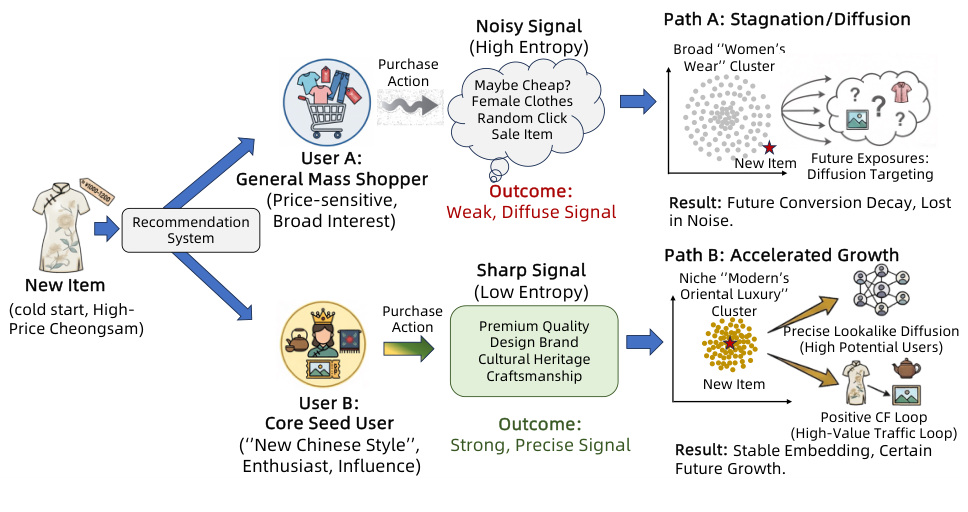
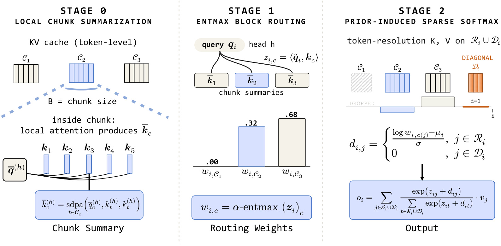

Paper Notes / Recommender Systems
记录生成式推荐、LLM4Rec 与推荐工程论文的精读过程：问题是什么，方法怎么搭，实验信号是否站得住。
关键不是“用了评论”，而是把 review 变成用户序列里的反馈事件，再用 DPO 把目标拉回 item token。


Recent Index
Reading Tracks
Semantic ID、序列生成、DPO/RL 对齐和生成式召回。
端侧意图理解、文本语义注入和推荐任务重写。
长序列、校准、冷启动、线上指标和系统代价。